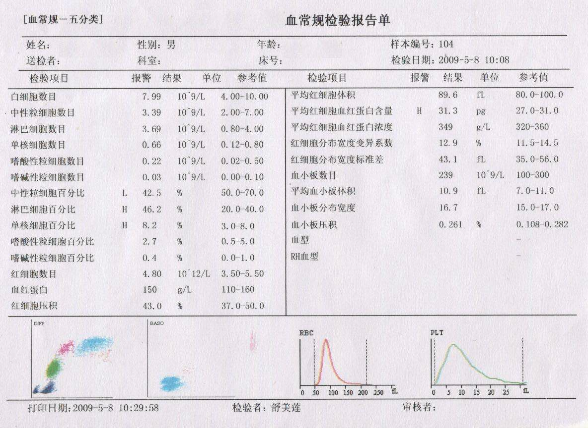
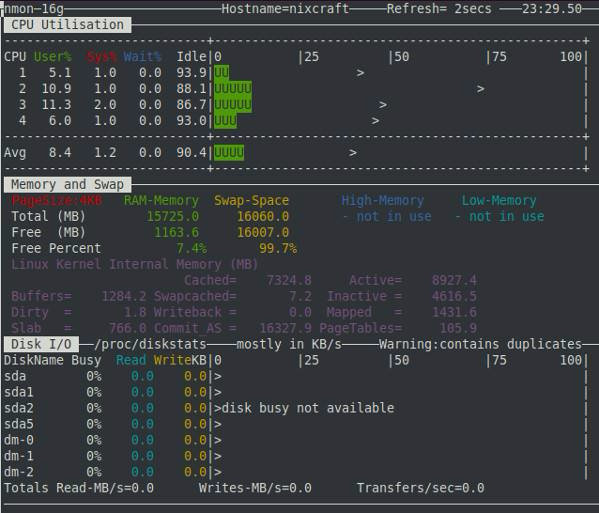
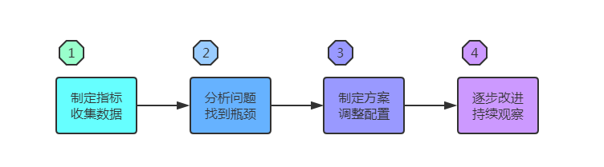

- 01 阅读此专栏的正确姿势.md.html
- 02 环境准备：千里之行，始于足下.md.html
- 03 常用性能指标：没有量化，就没有改进.md.html
- 04 JVM 基础知识：不积跬步，无以至千里.md.html
- 05 Java 字节码技术：不积细流，无以成江河.md.html
- 06 Java 类加载器：山不辞土，故能成其高.md.html
- 07 Java 内存模型：海不辞水，故能成其深.md.html
- 08 JVM 启动参数详解：博观而约取、厚积而薄发.md.html
- 09 JDK 内置命令行工具：工欲善其事，必先利其器.md.html
- 10 JDK 内置图形界面工具：海阔凭鱼跃，天高任鸟飞.md.html
- 11 JDWP 简介：十步杀一人，千里不留行.md.html
- 12 JMX 与相关工具：山高月小，水落石出.md.html
- 13 常见的 GC 算法（GC 的背景与原理）.md.html
- 14 常见的 GC 算法（ParallelCMSG1）.md.html
- 15 Java11 ZGC 和 Java12 Shenandoah 介绍：苟日新、日日新、又日新.md.html
- 16 Oracle GraalVM 介绍：会当凌绝顶、一览众山小.md.html
- 17 GC 日志解读与分析（基础配置）.md.html
- 18 GC 日志解读与分析（实例分析上篇）.md.html
- 19 GC 日志解读与分析（实例分析中篇）.md.html
- 20 GC 日志解读与分析（实例分析下篇）.md.html
- 21 GC 日志解读与分析（番外篇可视化工具）.md.html
- 22 JVM 的线程堆栈等数据分析：操千曲而后晓声、观千剑而后识器.md.html
- 23 内存分析与相关工具上篇（内存布局与分析工具）.md.html
- 24 内存分析与相关工具下篇（常见问题分析）.md.html
- 25 FastThread 相关的工具介绍：欲穷千里目，更上一层楼.md.html
- 26 面临复杂问题时的几个高级工具：它山之石，可以攻玉.md.html
- 27 JVM 问题排查分析上篇（调优经验）.md.html
- 28 JVM 问题排查分析下篇（案例实战）.md.html
- 29 GC 疑难情况问题排查与分析（上篇）.md.html
- 30 GC 疑难情况问题排查与分析（下篇）.md.html
- 31 JVM 相关的常见面试问题汇总：运筹策帷帐之中，决胜于千里之外.md.html
- 32 应对容器时代面临的挑战：长风破浪会有时、直挂云帆济沧海.md.html
03 常用性能指标：没有量化，就没有改进
前面一节课阐述了 JDK 的发展过程，以及怎么安装一个 JDK，在正式开始进行 JVM 的内容之前，我们先了解一下性能相关的一些基本概念和原则。
如果要问目前最火热的 JVM 知识是什么? 很多同学的答案可能是 “JVM 调优” 或者 “JVM 性能优化”。但是具体需要从哪儿入手，怎么去做呢？
其实“调优”是一个诊断和处理手段，我们最终的目标是让系统的处理能力，也就是“性能”达到最优化，这个过程我们就像是一个医生，诊断和治疗“应用系统”这位病人。我们以作为医生给系统看病作为对比，“性能优化”就是实现“把身体的大小毛病治好，身体达到最佳健康状态”的目标。
那么去医院看病，医生会是怎么一个处理流程呢？先简单的询问和了解基本情况，发烧了没有，咳嗽几天了，最近吃了什么，有没有拉肚子一类的，然后给患者开了一系列的检查化验单子：去查个血、拍个胸透、验个尿之类的。然后就会有医生使用各项仪器工具，依次把去做这些项目的检查，检查的结果就是很多标准化的具体指标（这里就是我们对 JVM 进行信息收集，变成各项指标）。
然后拿过来给医生诊断用，医生根据这些指标数据判断哪些是异常的，哪些是正常的，这些异常指标说明了什么问题（对系统问题进行分析排查），比如是白细胞增多（系统延迟和抖动增加，偶尔宕机），说明可能有炎症（比如 JVM 配置不合理）。最后要“对症下药”，开出一些阿莫西林或者头孢（对 JVM 配置进行调整），叮嘱怎么频率，什么时间点服药，如果问题比较严重，是不是要住院做手术（系统重构和调整），同时告知一些注意事项（对日常运维的要求和建议），最后经过一段时间治疗，逐渐好转，最终痊愈（系统延迟降低，不在抖动，不再宕机）。通过了解 JVM 去让我们具有分析和诊断能力，是本课程的核心主题。
2.1 量化性能相关指标

"没有量化就没有改进"，所以我们需要先了解和度量性能指标，就像在医院检查以后得到的检验报告单一样。因为人的主观感觉是不靠谱的，个人经验本身也是无法复制的，而定义了量化的指标，就意味着我们有了一个客观度量体系。哪怕我们最开始定义的指标不是特别精确，我们也可以在使用过程中，随着真实的场景去验证指标有效性，进而替换或者调整指标，逐渐的完善这个量化的指标体系，成为一个可以复制和复用的有效工具。就像是上图的血常规检查报告单，一旦成为这种标准化的指标，那么使用它得到的结果，也就是这个报告单，给任何一个医生看，都是有效的，一般也能得到一致的判断结果。
那么系统性能的诊断要做些什么指标呢？我们先来考虑，进行要做诊断，那么程序或 JVM 可能出现了问题，而我们排查程序运行中出现的问题，比如排查程序 BUG 的时候，要优先保证正确性，这时候就不仅仅是 JVM 本身的问题，例如死锁等等，程序跑在 JVM 里，现象出现在 JVM 上，很多时候还要深入分析业务代码和逻辑确定 Java 程序哪里有问题。
- 分析系统性能问题： 比如是不是达到了我们预期性能指标，判断资源层面有没有问题，JVM 层面有没有问题，系统的关键处理流程有没有问题，业务流程是否需要优化；
- 通过工具收集系统的状态，日志，包括打点做内部的指标收集，监控并得出关键性能指标数据，也包括进行压测，得到一些相关的压测数据和性能内部分析数据；
- 根据分析结果和性能指标，进行资源配置调整，并持续进行监控和分析，以优化性能，直到满足系统要求，达到系统的最佳性能状态。
计算机系统中，性能相关的资源主要分为这几类:
- CPU：CPU 是系统最关键的计算资源，在单位时间内有限，也是比较容易由于业务逻辑处理不合理而出现瓶颈的地方，浪费了 CPU 资源和过渡消耗 CPU 资源都不是理想状态，我们需要监控相关指标；
- 内存：内存则对应程序运行时直接可使用的数据快速暂存空间，也是有限的，使用过程随着时间的不断的申请内存又释放内存，好在 JVM 的 GC 帮我们处理了这些事情，但是如果 GC 配置的不合理，一样会在一定的时间后，产生包括 OOM 宕机之类的各种问题，所以内存指标也需要关注；
- IO（存储+网络）：CPU 在内存中把业务逻辑计算以后，为了长期保存，就必须通过磁盘存储介质持久化，如果多机环境、分布式部署、对外提供网络服务能力，那么很多功能还需要直接使用网络，这两块的 IO 都会比 CPU 和内存速度更慢，所以也是我们关注的重点。
其他各种更细节的指标，将会在工具和命令的使用章节详细介绍。
2.2 性能优化中常见的套路
性能优化一般要存在瓶颈问题，而瓶颈问题都遵循 80/20 原则。既我们把所有的整个处理过程中比较慢的因素都列一个清单，并按照对性能的影响排序，那么前 20% 的瓶颈问题，至少会对性能的影响占到 80% 比重。换句话说，我们优先解决了最重要的几个问题，那么性能就能好一大半。
我们一般先排查基础资源是否成为瓶颈。看资源够不够，只要成本允许，加配置可能是最快速的解决方案，还可能是最划算，最有效的解决方案。 与 JVM 有关的系统资源，主要是 CPU 和 内存 这两部分。 如果发生资源告警/不足, 就需要评估系统容量，分析原因。
至于 GPU 、主板、芯片组之类的资源则不太好衡量，通用计算系统很少涉及。
一般衡量系统性能的维度有 3 个:
- 延迟(Latency)： 一般衡量的是响应时间(Response Time)，比如平均响应时间。但是有时候响应时间抖动的特别厉害，也就是说有部分用户的响应时间特别高，这时我们一般假设我们要保障 95% 的用户在可接受的范围内响应，从而提供绝大多数用户具有良好的用户体验，这就是延迟的95线（P95，平均 100 个用户请求中 95 个已经响应的时间），同理还有99线，最大响应时间等（95 线和 99 线比较常用；用户访问量大的时候，对网络有任何抖动都可能会导致最大响应时间变得非常大，最大响应时间这个指标不可控，一般不用）。
- 吞吐量(Throughput)： 一般对于交易类的系统我们使用每秒处理的事务数(TPS)来衡量吞吐能力，对于查询搜索类的系统我们也可以使用每秒处理的请求数（QPS）。
- 系统容量(Capacity)： 也叫做设计容量，可以理解为硬件配置，成本约束。
这 3 个维度互相关联，相互制约。只要系统架构允许，增加硬件配置一般都能提升性能指标。但随着摩尔定律的失效，增加硬件配置到一定的程度并不能提供性能的线性扩展，比如说已经比较高配置的机器，CPU 核数或频率、内存扩大一倍，一方面并不能带来一倍的性能提升，另一方面带来的成本不止一倍，性价比急速下降，而且到了一定程度想加都加不上去了。作为云厂商的领头羊 AWS 今年才开始尝试提供 256 核的机器，而阿里云目前最高支持 104 核。所以目前来说，整体上使用分布式的解决办法，以及局部上对每个系统进行分析调优，是性价比最高的选择。
性能指标还可分为两类:
- 业务需求指标：如吞吐量(QPS、TPS)、响应时间(RT)、并发数、业务成功率等。
- 资源约束指标：如 CPU、内存、I/O 等资源的消耗情况。

详情可参考: 性能测试中服务器关键性能指标浅析
每类系统关注的重点还不一样。 批处理/流处理 系统更关注吞吐量, 延迟可以适当放宽。一般来说大部分系统的硬件资源不会太差，但也不是无限的。高可用 Web 系统，既关注高并发情况下的系统响应时间，也关注吞吐量。
例如： "配置 2 核 4GB 的节点，每秒响应 200 个请求，95% 线是 20ms，最大响应时间 40ms。" 从中可以解读出基本的性能信息: 响应时间(RT<40ms), 吞吐量(200TPS), 系统配置信息(2C4G)。 隐含的条件可能是 "并发请求数不超过 200 "。
我们可采用的手段和方式包括：
- 使用 JDWP 或开发工具做本地/远程调试
- 系统和 JVM 的状态监控，收集分析指标
- 性能分析: CPU 使用情况/内存分配分析
- 内存分析: Dump 分析/GC 日志分析
- 调整 JVM 启动参数，GC 策略等等
2.3 性能调优总结

性能调优的第一步是制定指标，收集数据，第二步是找瓶颈，然后分析解决瓶颈问题。通过这些手段，找当前的性能极限值。压测调优到不能再优化了的 TPS 和 QPS，就是极限值。知道了极限值，我们就可以按业务发展测算流量和系统压力，以此做容量规划，准备机器资源和预期的扩容计划。最后在系统的日常运行过程中，持续观察，逐步重做和调整以上步骤，长期改善改进系统性能。
我们经常说“脱离场景谈性能都是耍流氓”，实际的性能分析调优过程中，我们需要根据具体的业务场景，综合考虑成本和性能，使用最合适的办法去处理。系统的性能优化到 3000TPS 如果已经可以在成本可以承受的范围内满足业务发展的需求，那么再花几个人月优化到 3100TPS 就没有什么意义，同样地如果花一倍成本去优化到 5000TPS 也没有意义。
Donald Knuth 曾说过“过早的优化是万恶之源”，我们需要考虑在恰当的时机去优化系统。在业务发展的早期，量不大，性能没那么重要。我们做一个新系统，先考虑整体设计是不是 OK，功能实现是不是 OK，然后基本的功能都做得差不多的时候（当然整体的框架是不是满足性能基准，可能需要在做项目的准备阶段就通过 POC（概念证明）阶段验证。），最后再考虑性能的优化工作。因为如果一开始就考虑优化，就可能要想太多导致过度设计了。而且主体框架和功能完成之前，可能会有比较大的改动，一旦提前做了优化，可能这些改动导致原来的优化都失效了，又要重新优化，多做了很多无用功。